Many numbers we read every day come from a database. A sales report, a sports article or an AI written summary may say that a league played 228 matches in a season. Someone has to check that such a claim matches the data. Large language models (LLMs) can do this when they are allowed to query the database. However, the best results come from large commercial models, which are costly to run and cannot be run locally.
ClaimDB is a recent benchmark for this task [1]. Each claim comes with a large database, and a model must answer ENTAILED, CONTRADICTED or NOT ENOUGH INFO. The model gets one tool that runs SQL queries. Of the 30 models ClaimDB tested, 17 score below 55%. Small open models do especially poorly. Qwen3 8B scores 52.1% in the ClaimDB paper.
We asked why small models fail, and whether we can fix it without making them larger. We found that most failures come from writing SQL, not from reasoning about the claim. This led to a simple idea. The small model keeps the reasoning, and a specialist text to SQL model writes the queries.
Our work has two parts. In Part 1, we give the judge a SQL specialist and measure the gain across five small judges. In Part 2, we try to make the system cheaper. A router sends some claims to a simple Python lookup tool instead of the specialist. We report what worked, what failed, and why.
We make three contributions. (1) We give the judge a SQL specialist, which lifts every small judge we tested by 13 to 20 points. (2) We build a Python lookup tool and three routers that decide when to skip the specialist. (3) We analyse where this cheap path works and where it still fails.
A claim is a sentence that states a fact about the data, such as "The Scotland Premier League featured 228 matches in the 2015/2016 season." Each claim comes with a short hint that explains domain terms. A judge is the language model that reads the claim, queries the database and gives a verdict.
A claim is answerable when the database stores the facts needed to check it. The data then either supports the claim (ENTAILED) or refutes it (CONTRADICTED). A claim is unanswerable when no query on that database could settle it. Its correct label is NOT ENOUGH INFO. This is not the same as false. A false claim has evidence against it. An unanswerable claim has no possible evidence in this database. ClaimDB has three kinds of unanswerable claims:
The schema of a database is its list of tables, their columns and the links between them. Text to SQL is the task of turning a plain English question into an SQL query for a given schema. A tool call is one request that the judge sends to its tool, such as one SQL query.
Early work on claim checking over structured data used small tables that fit in the model's input. TabFact is the best known example, with claims about Wikipedia tables [3]. Real databases are far too large for this. Recent systems therefore let an LLM query the database. Thucy uses several cooperating LLM agents to verify claims across relational databases [2]. ClaimDB gives one judge a SQL tool and evaluates 30 models on large BIRD databases [1]. Both works rely on large models for their best results. ClaimDB shows that open models with at most 14B parameters mostly score between 34% and 62%.
Our work keeps the ClaimDB task and setup, but focuses on small open judges. We do not change or train the judge. Instead, we change the tool it uses. We also study when a cheaper tool is enough, which prior work does not do.
Text to SQL models have improved quickly, helped by benchmarks such as BIRD [4]. Recent 7B models trained only for this task reach strong accuracy. Arctic Text2SQL R1 7B answers 68.9% of BIRD's development questions correctly, according to its authors [5]. OmniSQL trains models of several sizes on large amounts of synthetic data [6]. These models answer questions. They do not judge whether a claim is true.
We use such a model as a component inside a claim checking system. The judge decides what to ask, and the specialist only writes SQL. We also compare several specialists of different sizes in the same role.
ReAct showed that LLMs work better when they alternate between reasoning steps and tool calls [7]. Many later systems follow this pattern, and ClaimDB's judge does too. In these systems, one model usually does both the reasoning and the tool input, such as the SQL query.
We split these two jobs between two models. The judge reasons in plain English, and a separate model writes the SQL. In Part 2 we go further and decide per claim whether the second model is needed at all.
Take the opening claim about the Scotland Premier League. The answer sits in a football database with seven tables. We gave this claim to Qwen3 8B with ClaimDB's single SQL tool. Its first query asked for a table called matches, which does not exist. It then listed the tables and looked inside Match. It did not find a league name there, and it gave up with NOT ENOUGH INFO. The claim is true. One join between the League and Match tables would have shown it.
This is a common pattern. We read ClaimDB's released runs of 11 open models with at most 14B parameters. When a query named a table or column that does not exist, the judge was right only 20.8% of the time. When every query ran, it was right 43.8% of the time. Across 19 models, models with more failed tool calls had lower accuracy (correlation of −0.88). Writing correct SQL for an unseen database looks like the main bottleneck.
We compare two setups that share the same judge, prompt, answer format and limit of 20 tool calls per claim (Figure 1). Only the tool changes.
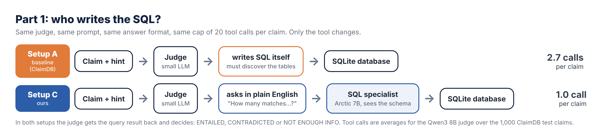
Figure 2 follows the opening claim through both setups. In setup C, the judge asks one question. The specialist sees the schema, so it finds the link between the two tables by itself. The judge compares the result of 228 with the claim and answers ENTAILED after one tool call.
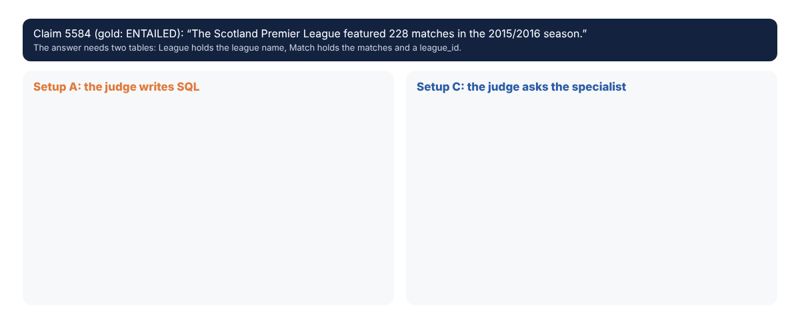
Data. We use the claims and databases released with ClaimDB. The public test set has 1,000 claims, with 333 ENTAILED, 331 CONTRADICTED and 336 NOT ENOUGH INFO. They cover 11 databases from BIRD's development set. Each database has 3 to 13 tables, and together they hold about 3.9 million rows. For some comparisons we also use a balanced subset of 210 claims, with 70 claims per label chosen with a fixed random seed.
Models. Our main judge is Qwen3 8B [8], the same model and build that ClaimDB used. We also test Qwen3 4B, Qwen3 1.7B, Llama 3.1 8B and Llama 3.2 3B [9], and Qwen3 14B for scale. The main specialist is Arctic Text2SQL R1 7B [5]. We also try OmniSQL 7B [6], SLM SQL 1.5B and Qwen2.5 Coder 7B as specialists. We fine tune none of the models.
Metrics. Accuracy is our main metric, as in ClaimDB. We also report recall per label, which is the share of claims with a given gold label that the judge labels correctly. This matters because a judge can change its accuracy just by saying NOT ENOUGH INFO more or less often. To compare two systems on the same claims we use the McNemar test. It looks only at claims where exactly one system is right, and asks whether that split could be due to chance. We call a difference significant when p is below 0.05. We also report the average number of tool calls and seconds per claim.
Compute. We run all models locally through Ollama with a context of 16,384 tokens. Most runs used one RTX 4070 Super GPU. The Qwen3 14B and OmniSQL runs used a cloud GPU.
Yes, by a large margin. Figure 3 places our Qwen3 8B judge next to the models reported by ClaimDB. Alone, the judge sits with the other small open models at 56.0%. With the specialist it reaches 76.0%, a gain of 20.0 points (95% interval 16.4 to 23.5). Only C is right on 283 claims, and only A is right on 83 (p < 0.001). Setup C is ahead on all 11 databases, by 8.9 to 34.1 points.
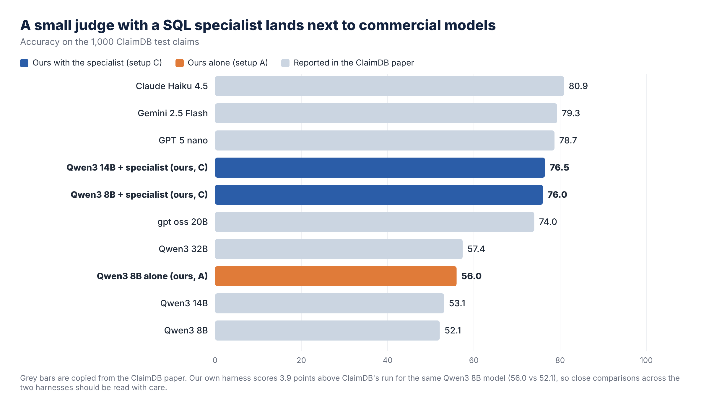
This places a small 8B judge ahead of every open model in the ClaimDB paper, including gpt oss 20B at 74.0%. It is close to GPT 5 nano (78.7%) and Gemini 2.5 Flash (79.3%). This comparison needs care. Our harness scores 3.9 points higher than ClaimDB's for the same Qwen3 8B model (56.0% against 52.1%). Part of the distance to the grey bars may therefore come from the harness.
The gain comes from answerable claims. Recall on ENTAILED claims rises from 31.5% to 64.9%, and on CONTRADICTED claims from 39.3% to 80.1%. The largest jump is on the 482 claims where setup A had queried a table or column that does not exist. There, accuracy rises from 43.8% to 73.7%. The judge also needs fewer tool calls, about 1 per claim instead of 2.7, because it no longer has to discover the schema.
The gain holds for every judge we tried (Figure 4). Every judge gains between 13 and 20 points from A to C, and every gain is significant. Qwen3 4B reaches 68.3%, and Qwen3 1.7B and Llama 3.1 8B both reach 54.7%. A larger judge did not help. Qwen3 14B with the specialist reaches 76.5%, almost the same as Qwen3 8B. This suggests that the specialist, not the judge, now limits accuracy.
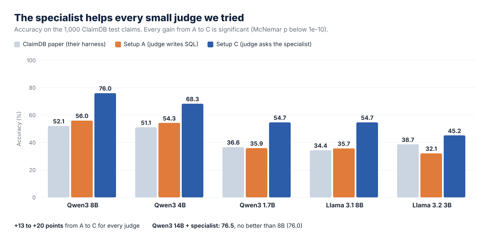
Table 1 lists the other variants we tried. A second SQL specialist, OmniSQL 7B, performs close to Arctic. Smaller or general models do much worse in the specialist role. SLM SQL 1.5B reaches 54.1%, and Qwen2.5 Coder 7B reaches 42.9% on the claims we could run.
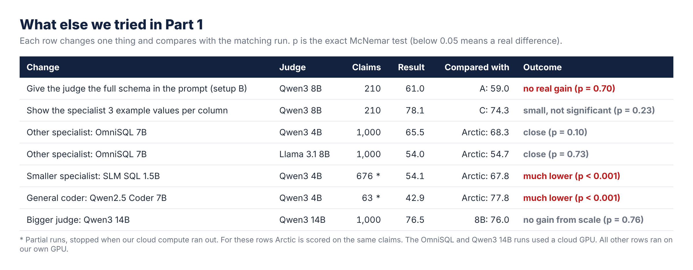
Giving the judge the schema (setup B). Our first idea was simpler than a specialist. We gave the judge the full schema in its prompt, so it would not have to guess names. Failed queries on the 210 claim subset fell from 219 to 5. Accuracy rose by only 2 points, from 59.0% to 61.0%, which is not significant. The reason was surprising. With the schema in hand, the judge stopped querying on 121 of the 210 claims and answered NOT ENOUGH INFO on all of them. Knowing the names was not enough. The judge still had to plan a correct query, and it often chose not to try.
Example values for the specialist. We also showed the specialist three example values for each column. Accuracy rose from 74.3% to 78.1% on the subset, but the gain is not significant. The claim hints already contain most of the values the specialist needs.
The cost of setup C. Recall on unanswerable claims falls from 96.7% in setup A to 83.0% in setup C. The specialist always returns some query and some result, even when the database cannot answer the question. The judge then treats that result as evidence. We show an example of this in Part 2 (Figure 7).
Setup C runs a second 7B model for every claim. Many claims look simple. They need one table and one count or comparison. We asked whether a lighter path could handle such claims without the specialist. This needs two new parts (Figure 5). Setup S is a cheap path with a Python lookup tool. A router decides, claim by claim, whether to use setup S or setup C.
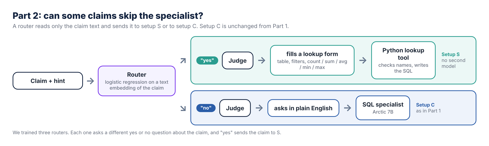
In setup S the judge never writes SQL. It fills a fixed lookup form instead. The form names one table, a list of filters and an optional count, sum, average, minimum or maximum. About 250 lines of Python turn the form into a safe query (Figure 6). The tool works in four steps. (1) It checks every table and column name against the real database. (2) It writes the SQL itself and passes values separately. (3) It runs the query in read only mode. (4) It returns the rows and the number of matching rows. When a name is wrong, the tool replies with the closest real names. For example, "superheroes" returns the suggestions "superhero" and "superpower". When a filter matches nothing, the tool shows stored values that look similar, such as "Marvel Comics" for a search on "Marvel". The prompt, answer format and limit of 20 tool calls are the same as in setups A and C.
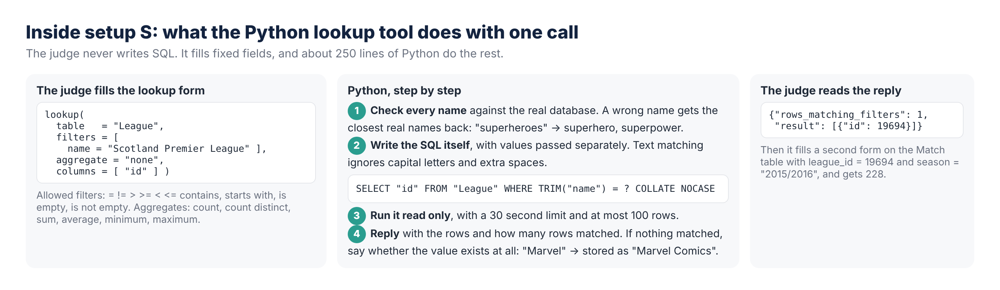
Figure 7 shows why a simpler tool can sometimes beat the specialist. Claim 1005 says that a client's junior credit card is on the Mastercard network. The database stores card types and issue dates, but not the card network. In setup C, the judge asked the specialist for the card's network. The specialist could not answer that question, so it answered a different one. It filtered for cards of type "credit", got an empty result, and the judge read the empty result as evidence against the claim. In setup S, the judge found the client's card in two lookups. It saw that the card exists and that no column stores a network. It answered NOT ENOUGH INFO, which is correct.
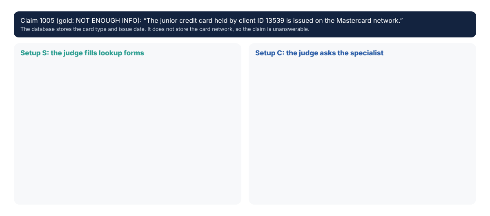
The router is a small and fast classifier. It turns the claim and its hint into a list of 768 numbers with a fixed text embedding model (nomic embed text). A logistic regression model then predicts "yes" or "no". We also tried small neural networks with one and two hidden layers. We trained three routers, each with a different question (Figure 8):
To train them, we labelled 40,652 claims from ClaimDB's training split. The table labels come from the reference SQL query behind each claim, and the unanswerable label comes from its gold verdict. We tuned the decision threshold on 7 more held out databases. We tested on the 1,000 test claims, whose 11 databases the routers never saw. At test time, a router sees only the claim text and its hint.
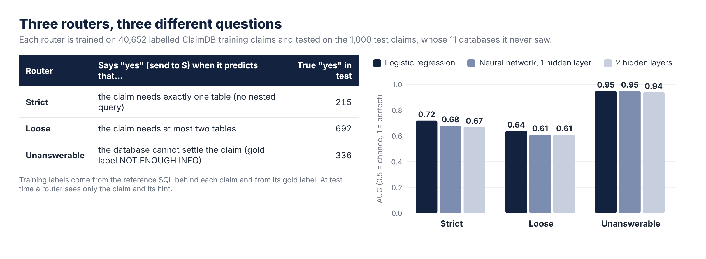
The unanswerable router is very good at its job (AUC 0.95). Unanswerable claims often give themselves away through their wording, such as "If..." or "most aesthetically pleasing". The table routers are much weaker, with AUC 0.72 and 0.64. The neural networks never beat logistic regression.
On all 1,000 claims, setup S with Qwen3 8B reaches 61.8%. This is better than setup A (56.0%, p < 0.001) but well below setup C (76.0%). Figure 9 shows all five judges on the 210 claim subset. For the Qwen judges, S is level with or better than A. Qwen3 4B gains the most, from 51.4% to 62.4%. The Llama judges are a different story. They often could not fill the lookup form correctly. Llama 3.1 8B ended 81 of the 210 claims without a verdict, and Llama 3.2 3B ended 104. Most of these runs stopped because the judge sent a malformed lookup form twice in a row.
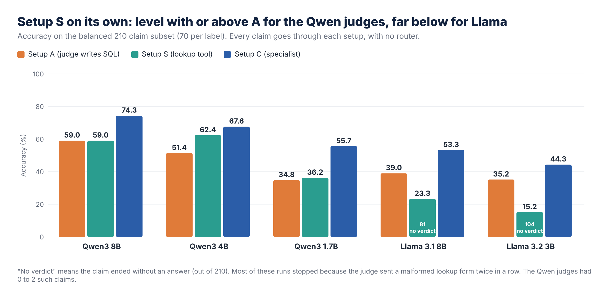
Figure 10 looks at the Qwen3 8B judge on all 1,000 claims. The unanswerable router sends 340 claims to S. On these 340 claims, setup S matches setup C (84.4% against 82.9%, not significant) and is 31% faster (19.1 against 27.8 seconds per claim). The split inside this group is uneven. S is clearly better on the 282 truly unanswerable claims (94.0% against 85.1%). C is clearly better on the 58 answerable claims that the router sent by mistake (72.4% against 37.9%).
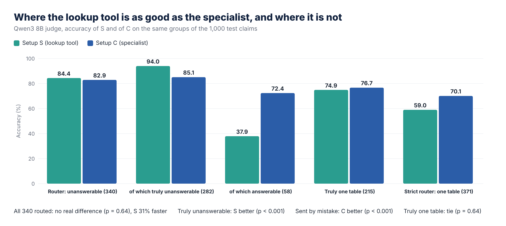
Table 2 shows the full routing results on the 210 claim subset. No router is significantly better than always using setup C. The unanswerable router keeps the Qwen judges close to C. Qwen3 4B even rises from 67.6% to 71.9%, but this is not significant on 210 claims. The strict and loose routers lower accuracy, often significantly.
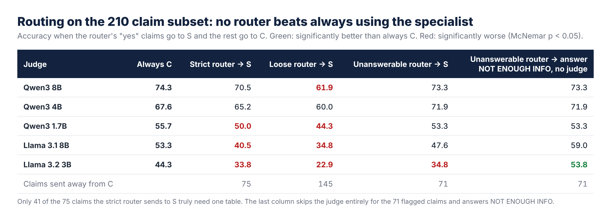
The last column of Table 2 tests a simpler rule. When the unanswerable router says "yes", we answer NOT ENOUGH INFO directly and skip the judge. This helps the weakest judges most. Llama 3.2 3B rises from 44.3% to 53.8% (p = 0.002). On all 1,000 claims, the same rule lifts Qwen3 4B from 68.3% to 72.1% and the two Llama judges by 8 and 11 points. We report this with caution. On those claims the router, not the judge, makes the decision, and the router relies on how ClaimDB words its unanswerable claims.
Routing by table count. We expected S to shine on claims that need one table, since one lookup should be enough. On the 215 claims that truly need one table, S scored 74.9% and C scored 76.7%. This is a tie in accuracy, and S is a third faster. The problem is the router. It sees only the claim text, but the number of tables depends on how the database is organised. The same sentence can need one table in one database and a join in another. The strict router sent 75 claims of the 210 subset to S, and only 41 of them truly needed one table. The loose router also sends claims that need a join, and S cannot do a join in one call.
S on one table claims. We read all 54 one table claims that S got wrong (Figure 11). In 30 of them, the judge fetched data but then made the wrong call. Three gaps explain most of these cases. (1) The lookup tool has no date functions. (2) It cannot compute percentages. (3) The judge sometimes picks the wrong column. For example, the claim "236 users created their accounts after 2013" needs the year of each account date. The form compared the whole date with 2013, so S counted 3,278 users and answered CONTRADICTED. In 9 other cases, the judge never made a lookup and answered NOT ENOUGH INFO.
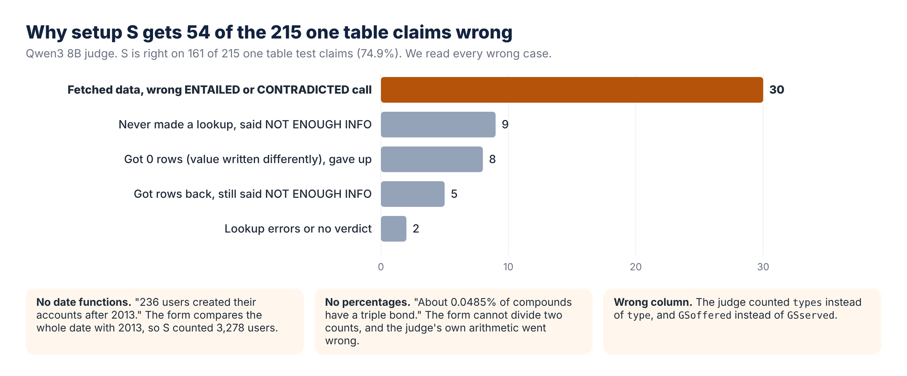
Speed. Setup S was meant to save time by dropping the specialist. Over all 1,000 claims, it saved only 1.8 seconds per claim (27.2 against 29.0 seconds). Most of the time goes into the judge's own reasoning, not into the specialist. The savings are larger only on claims that S settles in one or two lookups.
Our results point to a clear plan (Figure 12). Setup C stays as it is, because it works well. The cheap path needs two fixes, which we tackle in order.
Phase 1: make S reliable on one table claims. We first remove the router from the picture. Only claims that truly need one table go to S. Our goal is at least 90% accuracy on these claims, up from 74.9% today. We will improve the lookup tool using one table claims from ClaimDB's training split, which has 8,053 of them. We will score the final version once on the 215 test claims, so that the test claims do not shape the tool. The planned changes follow the error analysis. (1) We add a year filter. (2) We add a percentage option. (3) The tool's first reply will show every column with example values. (4) The prompt will tell the judge to look before answering NOT ENOUGH INFO.
Phase 2: a router that sends S the right claims. The current routers see only the claim text. We plan to fine tune a small language model as the router, with the database schema as extra input. The schema tells the router how many tables a claim needs. We will train it on the 46,486 labelled training claims. If it works, S will receive the claims it can handle, and the system will gain speed without losing accuracy.
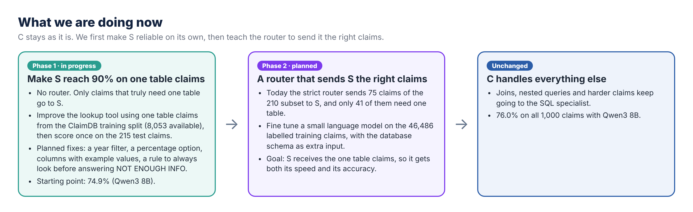
We test on one benchmark, and its claims come from BIRD questions. Our specialist was also trained on BIRD style data, which may favour it. The commercial model numbers come from ClaimDB's runs, not ours, and use a different harness. We ran each setup once, so we do not report variation across runs. Some comparisons use the 210 claim subset, which limits statistical power. Two specialist runs are partial because our cloud compute ran out. Finally, the unanswerable router may rely on how ClaimDB phrases its unanswerable claims, and may not transfer to other data.
Three findings stand out. First, small judges mostly fail at writing SQL, not at reasoning about the claim. Second, a 7B specialist that writes the SQL closes most of the gap, and lifts an 8B judge from 56.0% to 76.0% on ClaimDB. Third, the specialist is not needed everywhere. On claims the database cannot answer, a simple Python lookup tool is as accurate and faster. Making the lookup tool reliable on one table claims, and routing those claims to it, is the work we are doing now.
Code and results: github.com/Kushagra-Agnihotri/claimdb-specialist-sql. All result files, router outputs and figure scripts are in the Kanishk/ folder.
Team: Kushagra Agnihotri, Kanishk Didwania and Navtej Sai Singh Dua, with Prof. Dhruv Kumar, Dr. Krishna Garg and Dr. Chirag Chhablani. Course: [course name and code], BITS Pilani.
AI use: We used Claude to help write code, analyse results and edit the language of this post. We checked every number against our result files.
We thank the ClaimDB authors for releasing their benchmark, code and model runs.